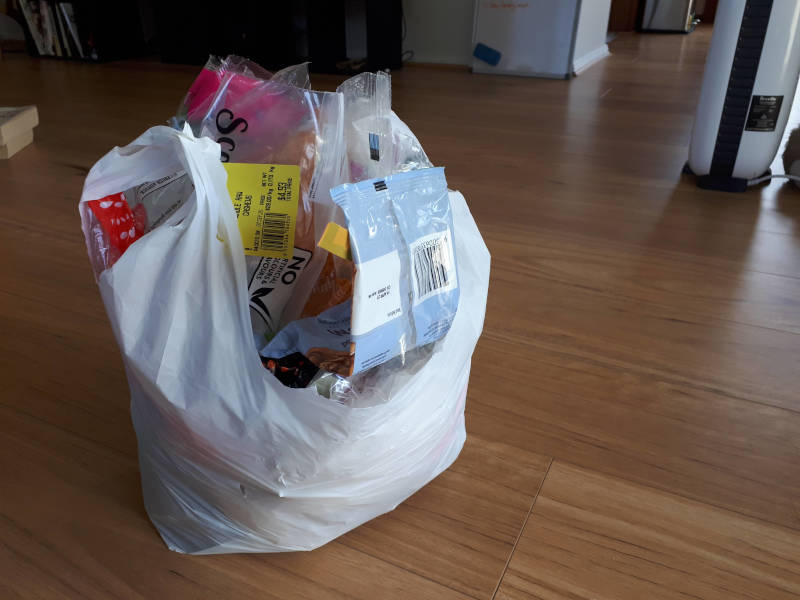
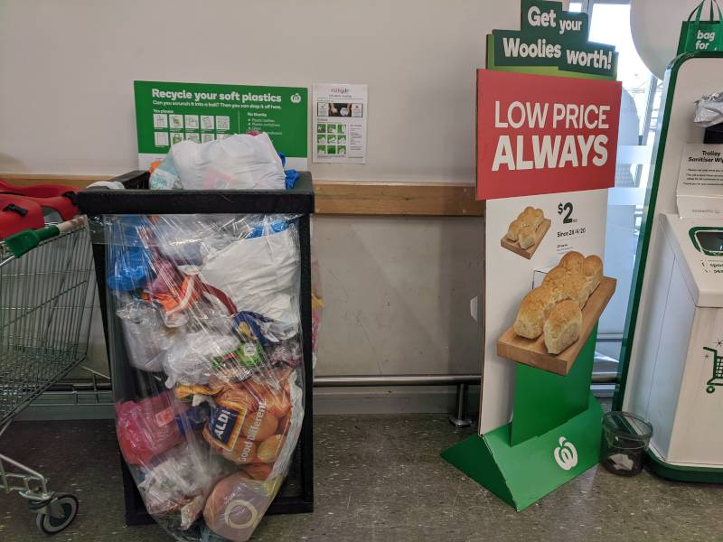

Soft-plastics recycling
Soft plastic recycling is pretty easy to do, and saves a bunch of room in the garbage. Since we started collecting our soft plastic rubbish separately, we only need to empty our garbage (red) bins every three weeks or so.
Soft plastics are pretty much any plastic you can scrunch up in your hand. Stuff like plastic bags, biscuit packets, cereal inner liners or frozen veggie bags.
Just a quick note on fresh produce bags. You can recycle them in soft plastic recycling, but it's pretty easy to avoid using them in the first place. Just chuck your veggies straight in the basket/trolley. Or if it's something hard to keep track of like brussels sprouts or loose green beans, grab a paper mushroom bag instead.
How to recycle soft plastics?
How and where do we recycle our soft plastics? We just collect our soft plastics in a bag like so:

Figure 1: A small collection we've been working on for a few weeks
And once full, drop it off in a soft plastic recycling bin, like so:

Figure 2: Soft plastics recycling outside Woolworths
If you know what you're looking for, they're fairly easy to find. Every Coles and Woolworths I've been to lately has one out the front.
What happens to the recycled plastics?
The soft plastic recycling bins at both supermarkets are part of the REDcycle program, which collects and sorts the plastics. It's then passed on to plastics manufacturers in NSW and Victoria 1, who create a bunch of interesting products. Stuff like outdoor benches, bollards, decking and even high performance asphalt additive.
REDcycle claims to have collected over 900 million pieces of plastic, or 3600 tonnes… Seems super impressive, but it's frightening to think of how much isn't being collected and is just going to landfills or floating around outside. We should be recycling all our soft plastic, since it's so easy, but also looking at how we can reduce our use of single use plastics in the first place.
Need some motivation?
In case you needed any more motivation, here's some things to think about each time you wheel the bin down the driveway:
- About 8 million tonnes of discarded plastic enters the ocean each year, with the total ocean plastic pollution expected to double by 20302.
- Australians use on average 130 kg of plastic per year. What about you? what percentage of that goes in the bin, and what percentage to recycling?
- We ingest about 5 g of plastic per week3. That's about a credit card worth, and it comes from drinking water (tap and bottled), beer, seafood, salt, etc. The health effects of this are unknown, but it's pretty gross.